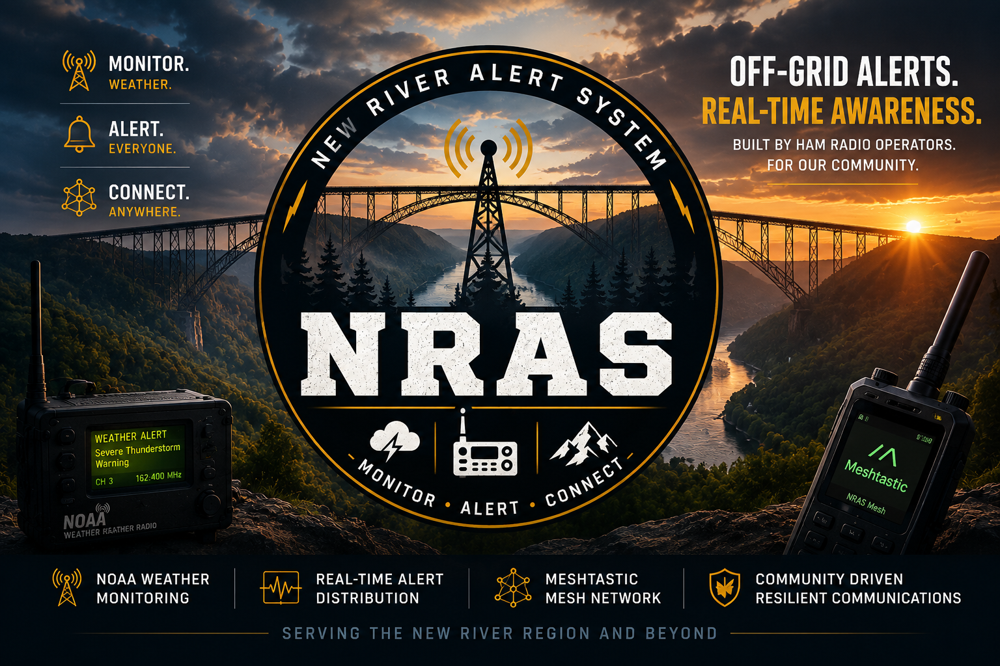

Weather Monitoring
Keeping an eye on National Weather Service information and encouraging awareness of changing weather conditions.

Helping our communities stay informed through weather monitoring, amateur-radio expertise, and resilient off-grid communications.
Explore NRASCurrent NWS watches, warnings, and advisories affecting selected Southern West Virginia counties, including Braxton County (Flatwoods).
Alerts refresh every 5 minutes while this page is open. This is an informational display, not an emergency notification service. Always follow official NWS guidance and local emergency officials. Visit weather.gov ↗
Technology and community working together to support weather awareness and communications across the New River region and Southern West Virginia.
Keeping an eye on National Weather Service information and encouraging awareness of changing weather conditions.
Exploring Meshtastic mesh networking as a way to exchange messages without relying on traditional cellular service.
Sharing resources and information to help neighbors understand weather risks and communication options.
NRAS is a community-oriented initiative focused on weather awareness, radio technology, and off-grid messaging in Southern West Virginia. Our goal is simple: monitor, alert, and connect. Explore our existing resources and updates through our NRAS Linktree.